Admissibility-Preserving Control
Overview
Every physical actuator has finite authority. Motors saturate, control surfaces hit their stops, thrusters cannot reverse instantly, and several actuators often draw from a single power or thermal budget. The usual approach is to design a nominal controller first and then clip its output, which makes the realized input nondifferentiable exactly where the constraint becomes active, and can place it directly on the boundary.
Admissibility-Preserving Control (APC) takes a different view. The physical plant input is not computed algebraically. It is generated by a dynamical system whose admissible set is forward invariant by construction, and the feedback law is then synthesized around this realized input. The dynamic module that does this is called an Admissibility-Preserving Input Realization (APIR). APC is the control architecture, and the APIR is the mechanism through which actuator admissibility is embedded in the closed loop.
Because the APIR state is continuously differentiable and stays strictly inside its admissible set, it can be treated as one more state in a recursive (backstepping) design. This gives Lyapunov-certified tracking with actuator limits that are respected for all time, rather than checked after the fact.
Key Contributions
A continuously differentiable APIR that keeps the realized input strictly inside asymmetric actuator limits, with interpretable tuning parameters and user-selectable smoothness.
APC backstepping for strict-feedback nonlinear systems without an input-to-state stability assumption on the open-loop plant, with an explicit APC compatibility condition linking the desired motion to the available actuator authority.
Composition with a smooth asymmetric barrier coordinate, so that actuator limits and time-varying output envelopes are enforced together.
A cascaded APIR that enforces actuator magnitude and rate limits at the same time.
An anisotropic APIR for multi-input systems under a joint capacity constraint, a shared envelope (such as a power budget) that cannot be expressed as independent per-channel limits.

APC for Strict-Feedback Nonlinear Systems with Asymmetric Actuator Constraints
Saurabh Kumar, Shashi Ranjan Kumar, and Abhinav Sinha, arXiv:2608.15375, 2026 (under review, International Journal of Robust and Nonlinear Control).
The Input Realization
Consider a strict-feedback nonlinear system
\[ \dot x_i = f_i(\bar x_i)+g_i(\bar x_i)x_{i+1},\ \ i=1,\dots,n-1, \qquad \dot x_n=f_n(\bar x_n)+g_n(\bar x_n)u,\qquad y=x_1 \]
whose actuator output must stay in the asymmetric interval \(\mathbb U=\{u \mid u_{\min}<u<u_{\max}\}\) with \(u_{\min}<0<u_{\max}\). Positive and negative authority often differ in practice (thrust versus braking, heating versus cooling), and replacing them with a symmetric interval based on the smaller magnitude wastes usable authority. The APIR keeps the two limits distinct:
\[ \dot u = p_1\left[\rho\left\{1-\left(\frac{u}{u_{\max}}\right)^{\gamma}\right\}+(1-\rho)\left\{1-\left(\frac{u}{u_{\min}}\right)^{\gamma}\right\}\right]u_c - p_1p_2u \]
where \(u_c\) is the command produced by the controller, \(\rho=1\) for \(u>0\) and \(\rho=0\) otherwise, and \(\gamma\) is an even integer. The effective gain falls to zero at either limit, so the vector field points strictly inward near the boundary. For any bounded command \(|u_c|\le\xi\), the realized input stays in a compact interval strictly inside \(\mathbb U\). On that interval the realization gain has a positive lower bound, which keeps the command law nonsingular.
The three parameters have a direct interpretation:
\(p_1\) sets the response speed (the bandwidth of the realization) without changing the constant-command equilibrium.
\(p_2\) sets the steady-state margin from the actuator limits through an exact algebraic relation, so a desired utilization can be designed directly.
\(\gamma\) shapes the gain rolloff near the limits and fixes the smoothness: the realization is at least \(\mathcal C^{\gamma-1}\), and \(\mathcal C^\infty\) in the symmetric case.
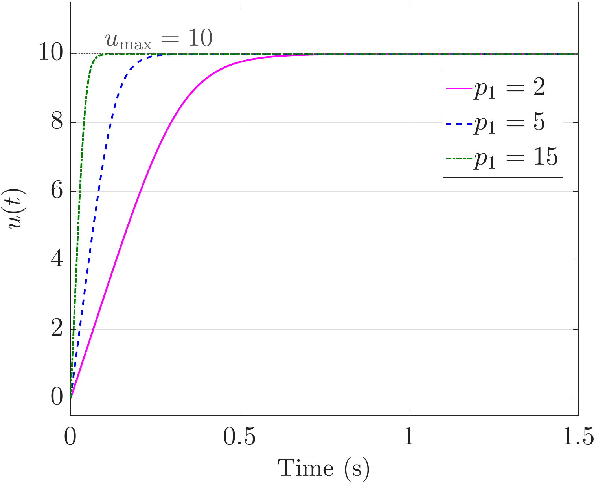
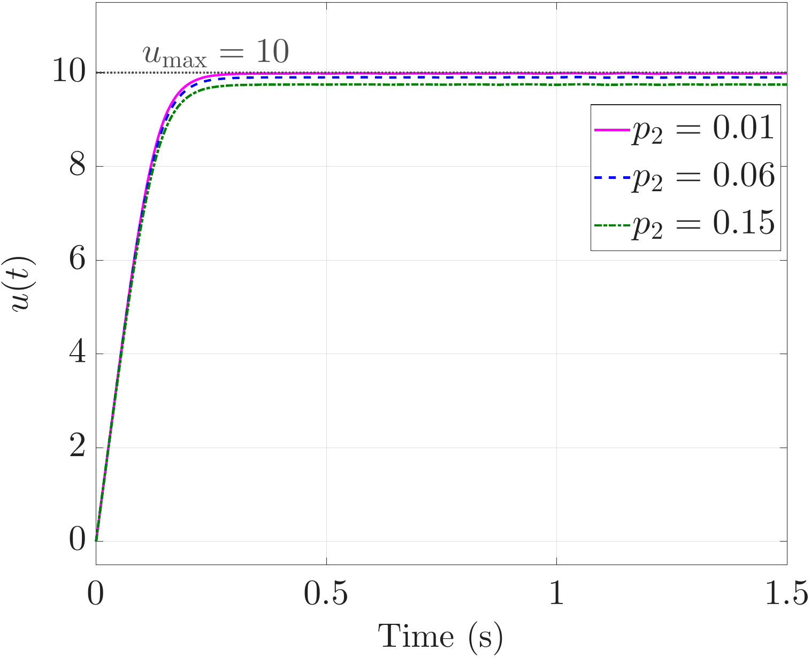
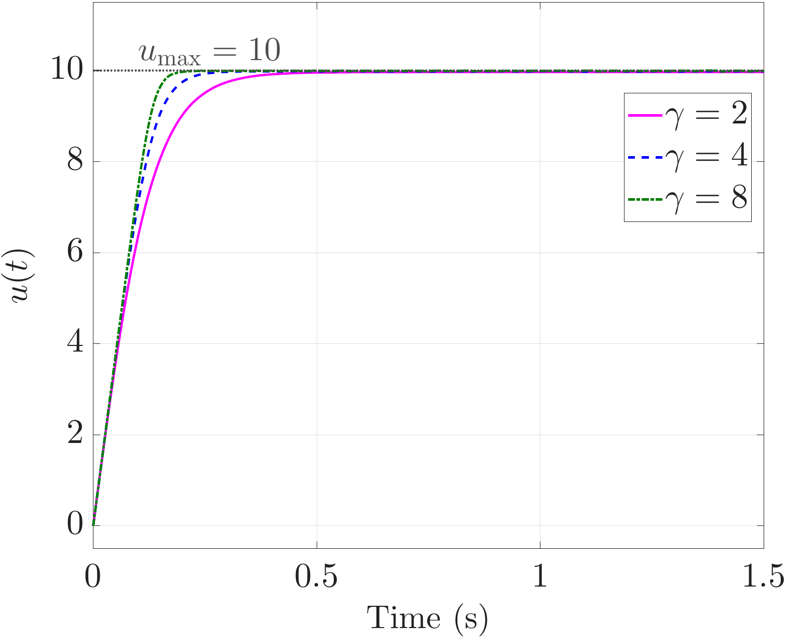
APIR response to a constant command \(u_c=15\) that exceeds the limits \(u_{\max}=10\), \(u_{\min}=-7\). The realized input never reaches the boundary.
APC Backstepping and Compatibility
The realized input \(u\) is added to the plant as an extra state, and the controller is designed recursively. After the usual \(n\) backstepping steps, a realization error \(\varrho = u-\eta_n\) is introduced, and the commanded input is chosen as
\[ u_c=\frac{\mathcal{F}(u)+\dot{\eta}_n -g_n(\bar{x}_n)\varphi_n-k_{n+1}\varrho}{\mathcal{G}(u)} \]
which makes the composite Lyapunov derivative exactly \(-\sum_j k_j\varphi_j^2-k_{n+1}\varrho^2\). Nonlinear drift terms are compensated recursively, so no input-to-state stability assumption on the uncontrolled plant is needed.
A hard-bounded controller cannot stabilize everything, and the paper states this limit explicitly. A Lyapunov sublevel set is called APC-compatible when the command it can demand stays within a bound \(\xi\) whose induced realization gain remains positive. On every compatible sublevel, the result guarantees exponential convergence of the tracking error, forward invariance of the actuator set, and boundedness of all closed-loop signals.
Output Safety and Rate Limits
The same realization composes with other safety layers without modification:
Input and output admissibility. A smooth asymmetric logarithmic barrier coordinate maps a time-varying output corridor \(\underline y(t)<y<\overline y(t)\) to an unconstrained variable. Unlike branch-selected barrier functions, it stays differentiable when the tracking error changes sign, which recursive design requires.
Magnitude and rate. Cascading two APIR layers, with the inner layer's bounds derived from the prescribed rate limits, keeps both \(u\) and \(\dot u\) inside their asymmetric intervals. Rate admissibility follows from the structure of the cascade, not from a separate slew-rate limiter applied afterwards.
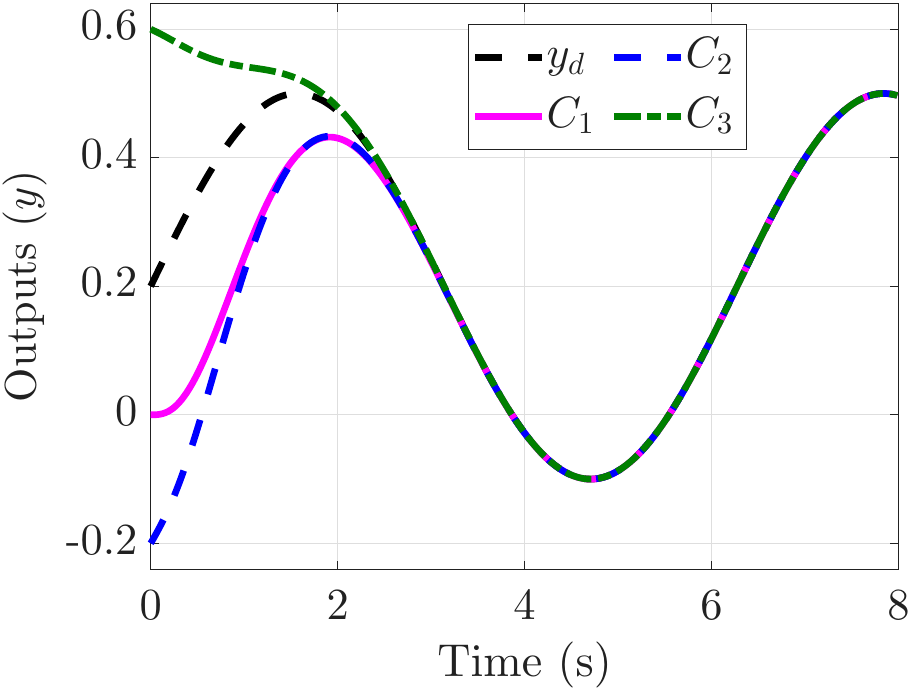
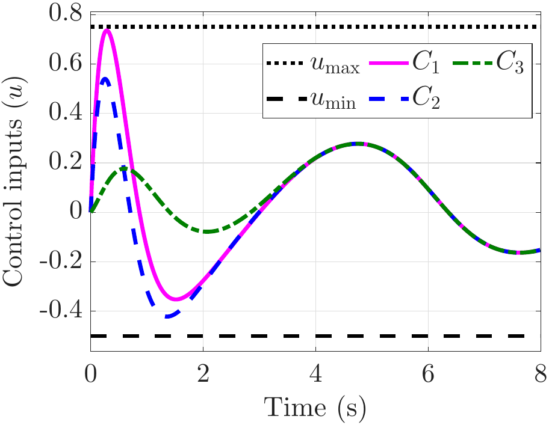
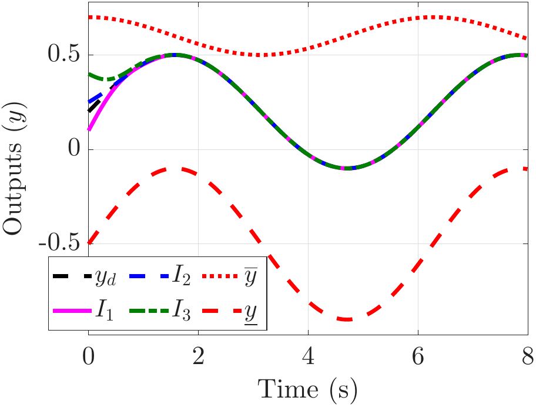
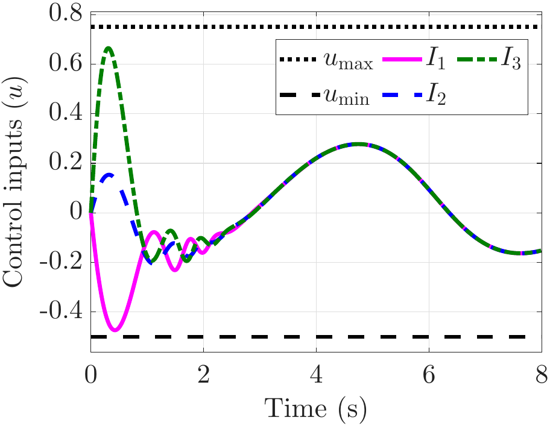
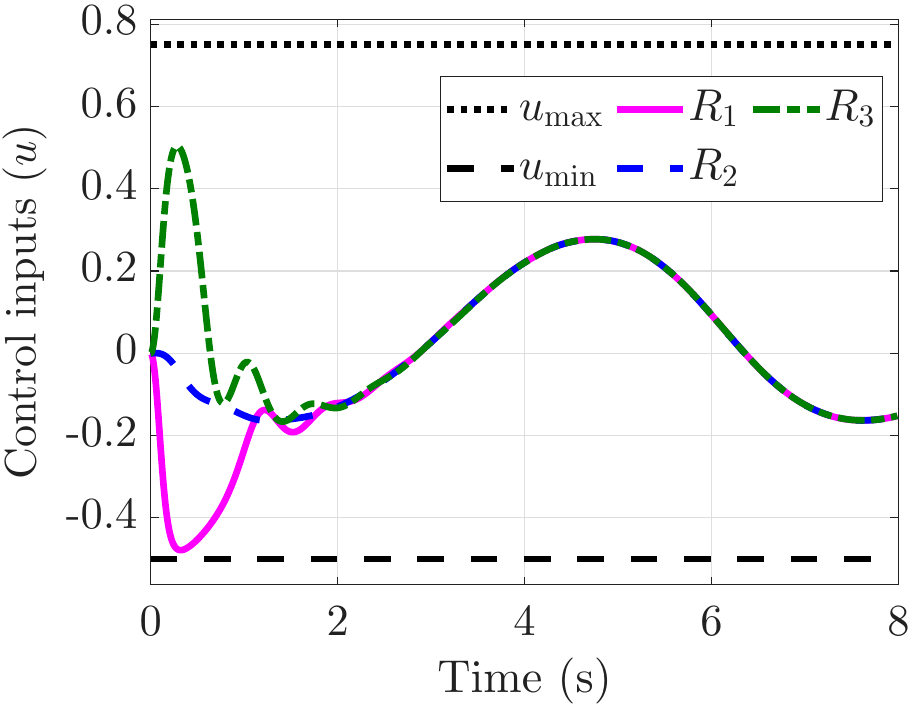
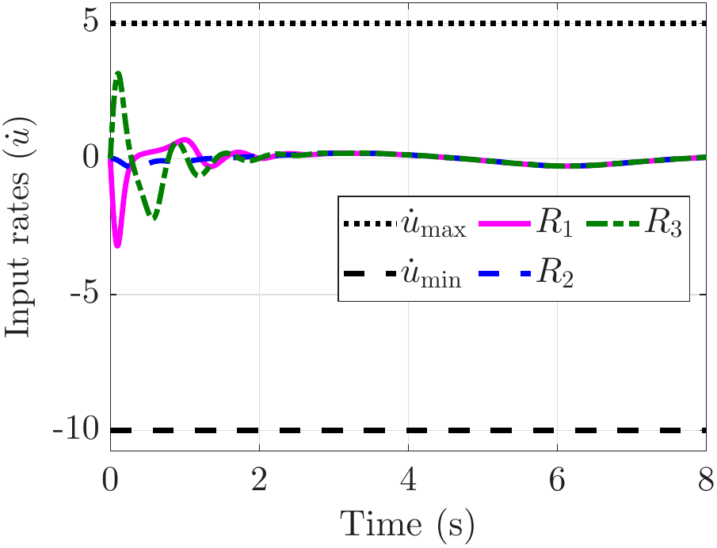
APC for Multi-Input Systems with Joint Capacity Constraints
Saurabh Kumar, Lohitvel Gopikannan, Shashi Ranjan Kumar, and Abhinav Sinha, arXiv:2610.00533, 2026.
Shared Envelopes
When several actuators share a common resource, such as a fixed-wing UAV whose control surfaces and propulsion draw from one electrical bus, every channel can be within its own limit while the total demand still exceeds the shared capacity. The admissible set is then the intersection of the per-channel box with a joint constraint \(\varphi(\mathbf u)<0\), and its boundary cannot be attributed to any single input. Channel-wise saturation, decoupled barrier functions, and per-channel APIR all enforce a box, so they cannot capture this coupling.
At a point near the joint boundary, only one direction can cause a violation: the outward normal \(\mathbf n(\mathbf u)=\nabla\varphi/\|\nabla\varphi\|\). Motion in the tangent plane leaves \(\varphi\) unchanged. A direction-blind (isotropic) realization slows both equally and wastes authority along the boundary.

Anisotropic Joint-Admissibility-Preserving Input Realization
The AJ-APIR replaces the diagonal per-channel gain with a matrix gain that decomposes spectrally along the constraint normal and tangent plane:
\[ \dot{\mathbf u} = \mathbf G(\mathbf u)\,\mathbf u_c - p_2\,\mathbf u, \qquad \mathbf G(\mathbf u) = G_\perp(\mathbf u)\,\mathbf n\mathbf n^\top + G_\parallel(\mathbf u)\left(\mathbf I - \mathbf n\mathbf n^\top\right) \]
with \(G_\perp = p_{1,\perp}\left(-\varphi(\mathbf u)\right)^{\gamma_\perp} S_{\mathrm{box}}(\mathbf u)\) and \(G_\parallel = p_{1,\parallel} S_{\mathrm{box}}(\mathbf u)\), where \(S_{\mathrm{box}}\) is the product of the per-channel APIR factors. Near any box face, both gains vanish and each channel stays within its limits. Near the joint boundary, only \(G_\perp\) vanishes, so authority is withdrawn only in the direction in which the shared envelope can be violated. A bounded command confines the realized input to a compact subset of the joint admissible set. This holds even where the envelope and the box meet at corners, so no separation between them has to be assumed.
A backstepping outer loop generates a scalar effective command, which is realized through the minimum-energy solution in the metric induced by \(\mathbf G\). The result is exponential convergence of the tracking and realization errors on every AJ-APC compatible sublevel, forward invariance of the joint admissible set, and bounded closed-loop signals.
The paper also proves that anisotropy reduces the required command. Under the stated gain rule, the anisotropic realization needs a commanded input no larger than any isotropic counterpart with the same normal gain, and strictly smaller whenever the required input velocity has a tangential component. The reduction has the closed form
\[ \frac{\|\mathbf u_c\|_{\mathrm{aniso}}}{\|\mathbf u_c\|_{\mathrm{iso}}} = \left[1 + \left(\frac{G_\parallel}{G_\perp} - 1\right)\sin^2\theta_g\right]^{-1} \]
where \(G_\parallel/G_\perp\) is the anisotropy ratio and \(\theta_g\) is the angle between the plant's input coupling vector and the constraint normal.
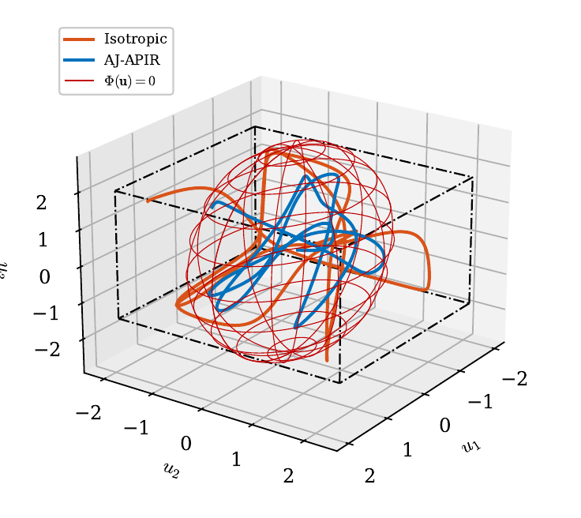
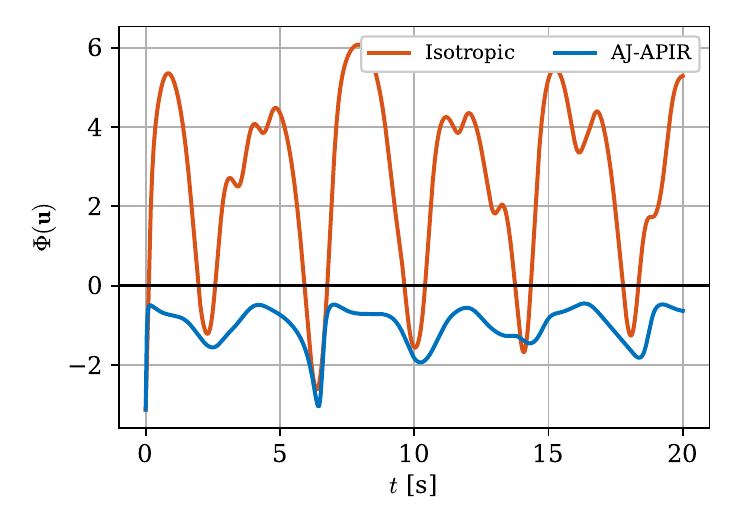
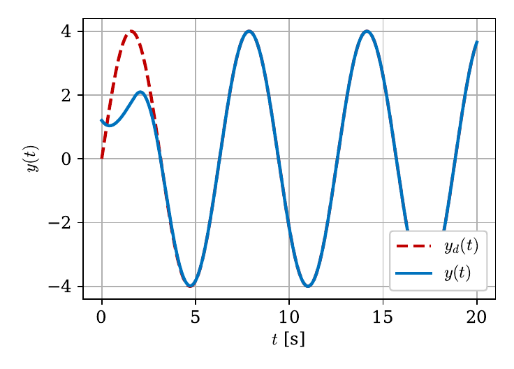
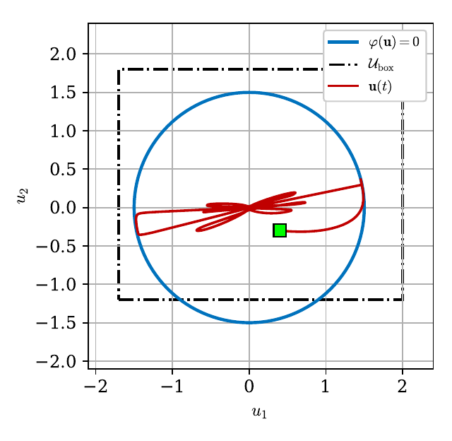
Relevant Publications
Preprints
Saurabh Kumar, Lohitvel Gopikannan, Shashi Ranjan Kumar, and Abhinav Sinha, Admissibility-Preserving Control for Multi-Input Systems with Joint Capacity Constraints, ArXiv, 2026.
Saurabh Kumar, Shashi Ranjan Kumar, and Abhinav Sinha, Admissibility-Preserving Control for Strict-Feedback Nonlinear Systems with Asymmetric Actuator Constraints, International Journal of Robust and Nonlinear Control, 2026 (under review).
Saurabh Kumar, Shashi Ranjan Kumar, and Abhinav Sinha, Provably Safe Control for Constrained Nonlinear Systems with Bounded Input, ArXiv, 2025 (under review).